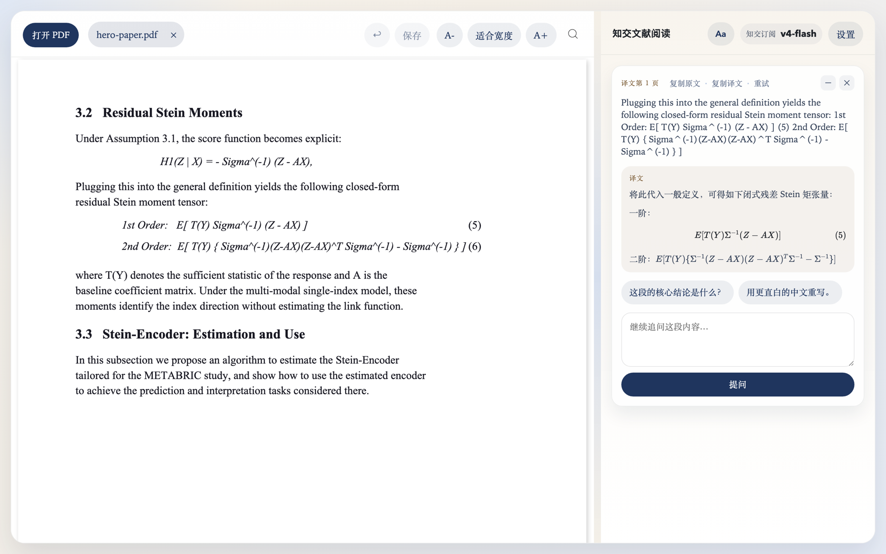

左边读 PDF，右边看译文
一个本地运行的 AI 文献阅读器。选中一段英文，两秒内看懂它——公式不再变成乱码。
为中文学术阅读做的：数学公式、术语解释、同段追问，以及能写回 PDF 文件的划线批注。
免费开源 · macOS / Windows / Linux · GitHub 源码 · 网页版需知交订阅激活码

Sigma^(-1)，右边是渲染好的公式与编号。它解决什么问题
如果你读英文论文时被这三件事烦过，这个工具就是为你做的。
公式扛得住真实论文
翻译区带完整的 Markdown + KaTeX 渲染，并对模型常犯的公式错误做了多层自动修复：漏写定界符、编号写错位置、上标冲突。通用翻译软件在这里全军覆没。
划线批注写进 PDF 文件
五色高亮加批注卡片，⌘S 保存后直接写入 PDF 文件本身。用 WPS、Adobe、预览打开同一个文件都看得见；别的软件做的高亮，这里也读得出来。
本地优先，数据不被绑架
应用跑在你自己的电脑上，PDF 文件从不离开本地，API key 只存本机。摘录可以直接追加到你的 markdown 笔记文件夹（Obsidian 兼容）。
为长时间阅读设计
暖纸色背景、衬线正文、可调字号行距，向经典阅读器的双栏布局致敬。多标签页瞬时切换，卡片可折叠、可复制、可重试。
看不懂就接着问
每段译文都是一张卡片，可以就这一段继续追问，上下文一直保留。术语解释会单独成段列出。
模型随你换
DeepSeek、上海交大 API、OpenAI、本地 Codex，或任意 OpenAI 兼容接口，设置里一键切换、保存前可测试连接。
两种使用方式，同一个应用
没有阉割版：功能完全一致，区别只在于模型额度谁来出。
| 自带 API key（免费） | 知交订阅 | |
|---|---|---|
| 需要做什么 | 自己申请 API key 并填入 | 填一个激活码 |
| 模型 | 你选：DeepSeek / SJTU / OpenAI / 自定义 | 内置 DeepSeek v4-flash |
| 费用 | 软件免费，模型按你自己的账户计费 | 订阅内含额度，无需另外申请 API |
| 网页版 | —（桌面版专属） | 浏览器里直接用，免安装 |
| 适合谁 | 已有 key，或想完全自己掌控 | 不想折腾 API 配置的读者 |
想要知交订阅的激活码？
目前处于小范围测试阶段，激活码由开发者手动发放。如果你是同学或同事，直接找我要即可；也欢迎在 GitHub 上开 issue 说明用途。
下载
当前版本 v1.1.1 · 免费 · 开源
⚠️ 第一次打开会被系统拦下，这是正常的
本项目还没有购买苹果和微软的代码签名证书（每年数千元），所以首次启动系统会警告。源码全部公开，你可以自己检视、自己构建。
macOS：提示「无法打开，因为 Apple 无法检查它是否包含恶意软件」时——
- 在「访达」里找到
/应用程序/知交文献阅读.app - 右键 → 点「打开」→ 弹窗里再点「打开」
- 之后双击就能正常启动了
或者在终端里执行一行命令：
xattr -dr com.apple.quarantine "/Applications/知交文献阅读.app"Windows：弹出「Windows 已保护你的电脑」时，点「更多信息」→「仍要运行」。
装好之后怎么开始
- 打开应用，点右上角设置
- 选服务提供方：有激活码就选「知交订阅」并粘贴激活码；否则选 DeepSeek 等并填入自己的 API key
- 点「测试连接」，通过后保存
- 把 PDF 拖进左栏，选中一段英文，右栏就会出现译文
提示：扫描版（文字不能选中的）PDF 暂不支持。